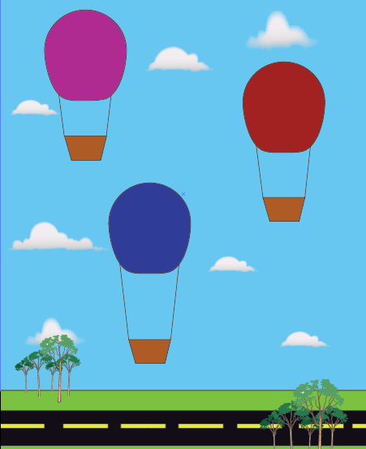

Design Shoes is a Marketing I class project that promotes a
student business.

This student projecct from Graphic Design I contains several different logos
of various well known businesses including: Adidas, Apple, Target, and Nike.

From Graphic Design II, this student project depicts a vibrant illustration of canned
tuna mackerel, adorned with four yellow stars around a gaping fish.

A product of Graphic Design I, this student project contains three colorful hot air balloons
that have taken flight and float behind green land and a sky blue horizon.